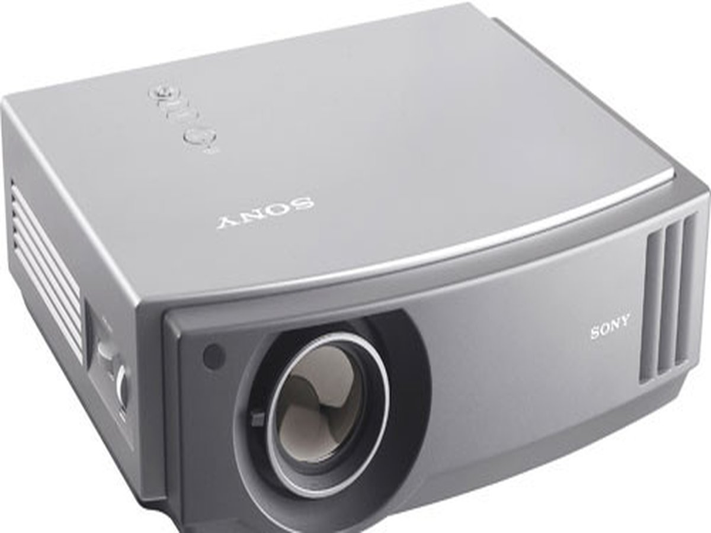

Other items for sale in Sialkot
More used electronics and industrial machines available from the same owner.
Looking for an affordable video projector in Pakistan? This used Sony VPL-AW15 is available at PKR 79,000 — 720p HD, 1300 lumens, 15,000:1 contrast, HDMI. Projects 40 to 200 inches. Owner-direct from Sialkot, delivery across Punjab.

If you are searching for a video projector for sale in Pakistan, the Sony VPL-AW15 is one of the best used multimedia projectors available at this price point. It uses Sony's SXRD (Silicon X-tal Reflective Display) technology — a premium variant of LCOS (Liquid Crystal on Silicon) that delivers deep blacks, high contrast, and smooth motion without the "rainbow effect" common in cheaper DLP projectors. It was Sony's entry-level home cinema machine when new, and still performs well for movies, cricket screenings, school presentations, and office meetings.
With 1300 ANSI lumens and a 15,000:1 dynamic contrast ratio, this digital projector handles both bright and dark scenes convincingly. The 720p HD Ready native panel (1280×720) projects sharp images at any size from 40 to 200 inches diagonal — making it a genuine home cinema experience at a fraction of the cost of a large TV.
This unit is used, in working condition, and available for direct inspection at our facility in Sialkot. We deliver to all major cities in Punjab — Lahore, Gujranwala, Wazirabad, Gujrat, Jhelum, Sheikhupura — and can arrange TCS/Leopards courier to Karachi, Islamabad, Peshawar and beyond. Check our full price list or complete catalogue for all available items.
This used Sony VPL-AW15 is priced at PKR 79,000 (negotiable) — direct from the owner in Sialkot, no broker, no commission. For context: a new comparable home theater projector (720p LCOS/SXRD) costs PKR 1.5–3 lakh in Pakistan today. A new 80-inch LED TV costs PKR 3–6 lakh. This projector gives you a bigger, more immersive picture at a fraction of that cost. WhatsApp +92 333 4445931 for photos, lamp-hours info, and a same-day reply.
This multimedia projector suits a wide range of buyers in Pakistan:
| Brand / Model | Sony VPL-AW15 |
| Display technology | SXRD (0.61" panel) |
| Native resolution | 1280 × 720 (HD Ready / 720p) |
| Brightness | 1300 ANSI lumens |
| Contrast ratio | 15,000:1 (dynamic) |
| Lamp | 165W UHP (LMP-AW100) |
| Lamp life | 2000h normal · 3000h eco mode |
| Inputs | HDMI ×1 · Component ×2 · S-Video ×1 · Composite ×1 · D-Sub 15 (VGA) ×1 |
| Audio | 10W mono speaker |
| Zoom | 1.6× manual zoom, manual focus |
| Throw ratio | 1.4 – 2.28:1 |
| Screen size | 40 – 200 inches |
| Keystone | Vertical ±15° |
| Power | 270W (operation) · 220–240V AC |
| Dimensions | 420 × 166 × 398 mm |
| Weight | 7.5 kg |
| Condition | Used — working |
| Price | PKR 79,000 (negotiable) |
| Location | Sialkot, Punjab, Pakistan |
PKR 79,000
Negotiable · Direct from owner
WhatsApp for photos, lamp-hours info, and a same-day reply from the owner.
Owner-direct sale from Sialkot. No broker, no commission. Inspect before you buy — on-site demo available. Delivery across Punjab.
Common questions from Pakistani buyers about this projector and video projectors in general.
Used video projectors in Pakistan range from PKR 20,000 (basic XGA) to PKR 1.5 lakh (full HD, high-brightness) depending on brand and condition. This used Sony VPL-AW15 is priced at PKR 79,000 — a premium SXRD home theater projector at mid-range pricing. New comparable models cost PKR 1.5–3 lakh. WhatsApp +92 333 4445931.
For large screen sizes, yes — a projector gives you 80–100 inches for a fraction of what a 75-inch TV costs. A new 85-inch LED TV costs PKR 4–6 lakh in Pakistan; this projector costs PKR 79,000 used. The trade-off is that projectors need a darkened room and a lamp that eventually needs replacing. For bright rooms or always-on use, a TV is more practical. For cinema nights, match screenings, and events, a projector wins on value.
SXRD (Silicon X-tal Reflective Display) is Sony's version of LCOS — Liquid Crystal on Silicon. It reflects light off a chip rather than passing it through a panel (LCD) or spinning it through a colour wheel (DLP). The result: deeper blacks, higher contrast, and no "rainbow effect" (the brief colour fringing that some viewers see on DLP projectors). For home cinema use, SXRD/LCOS generally produces a more film-like image than DLP at comparable brightness levels.
Yes — the Sony VPL-AW15 is well-suited for match nights. At 1300 lumens, it works best in a darkened or semi-darkened room. For an indoor lounge or a room with curtains drawn, you will get a clear, bright picture at 80–120 inches. For a fully outdoor or daylight setup, you would need a brighter projector (3000+ lumens). The HDMI input connects to a satellite receiver, Android TV box, or laptop directly.
Laptop: Use the HDMI port (most modern laptops) or the VGA (D-Sub 15) port (older laptops). An HDMI cable carries both video and audio.
Android phone: Use a USB-C to HDMI adapter (available at Hafeez Centre Lahore or any mobile accessories shop, around PKR 500–1,000).
Media player / Android TV box: Connect directly to the HDMI port. This is the most popular setup in Pakistan for streaming content.
Older DVD/VCD player: Use the Component or Composite (RCA) inputs already included on this projector.
HD Ready (720p) has a resolution of 1280×720 pixels; Full HD (1080p) has 1920×1080. For screens up to 100 inches viewed from 2–4 metres, 720p is perfectly sharp — most Pakistani cable TV, streaming services, and sports broadcasts are 720p anyway. Full HD matters more for very large screens (120"+) at close viewing distances, or for watching 1080p Blu-ray discs. This Sony projects at 720p natively; 1080p sources are scaled down and still look excellent.
Yes — it has one HDMI input, two Component video inputs, S-Video, Composite, and a D-Sub 15 (VGA) input for PC connection. The HDMI port handles modern devices; VGA covers older laptops and computers.
The 165W UHP lamp (model LMP-AW100) is rated 2000h in normal mode and 3000h in eco mode. Replacement lamps are available from Sony-authorised dealers in Lahore, Karachi, and Islamabad, and through online marketplaces (Daraz, OLX). Sony Pakistan support: sony.com.pk. Budget PKR 8,000–15,000 for a genuine replacement lamp when the time comes.
From 40 to 200 inches diagonal. At a 3-metre throw distance it produces roughly an 80–100 inch image. Throw ratio is 1.4–2.28:1 with the 1.6× manual zoom — so you can fine-tune the image size without moving the projector. A standard lounge (3–4 metres long) gives you a 90–120 inch picture.
Yes — we deliver to Lahore, Gujranwala, Gujrat, Wazirabad, Jhelum, and Sheikhupura directly. For Karachi, Islamabad, Peshawar and other cities, we dispatch via TCS or Leopards Courier. WhatsApp +92 333 4445931 for a freight quote to your city.
Roman Urdu / اردو میں سوال جواب
Pakistan mein used projector PKR 20,000 se lekar PKR 1.5 lakh tak milte hain. Yeh Sony VPL-AW15 PKR 79,000 mein dastiyab hai — seedha maalik se, koi broker nahi. WhatsApp: +92 333 4445931.
Bari screen ke liye projector behtar value hai. Nai 85 inch LED TV Pakistan mein PKR 4–6 lakh mein milti hai — is projector ki qeemat sirf PKR 79,000 hai aur 100 inch ka display milta hai. Cricket match, film, aur family gatherings ke liye projector bilkul theek hai.
Haan — ek HDMI port hai. Laptop seedha HDMI se connect hoga. Android phone ke liye USB-C to HDMI adapter chahiye (Hafeez Centre Lahore ya kisi bhi mobile shop mein milega, approximately PKR 500–1,000).
40 se 200 inch tak. 3 meter ki doori par roughly 80–100 inch ki screen milti hai. Ghar mein cinema jaisa experience PKR 79,000 mein.
Haan — Punjab ke shehar (Lahore, Gujranwala, Gujrat, Wazirabad) directly deliver karte hain. Karachi, Islamabad, Peshawar TCS/Leopards courier se. WhatsApp karein freight quote ke liye.
More used electronics and industrial machines available from the same owner.
WhatsApp for photos, lamp-hours info, and current availability. Owner-direct from Sialkot — same-day reply.